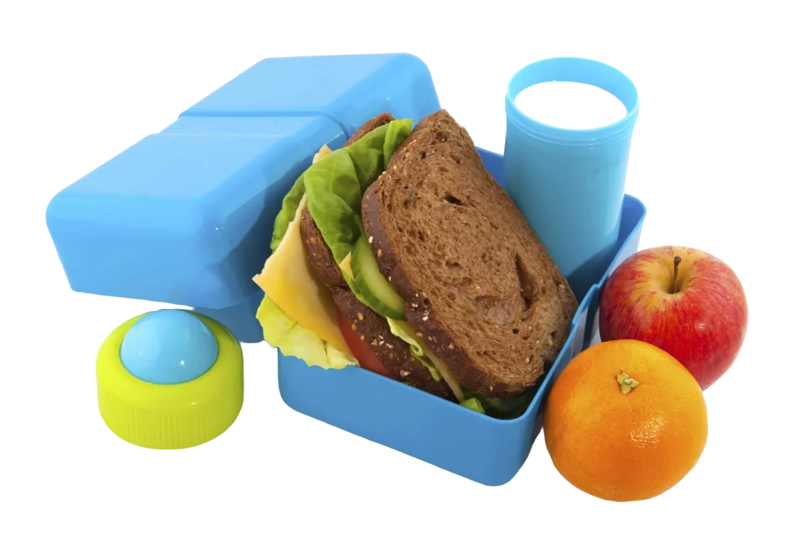

El siguiente proyecto tiene como finalidad resolver la problemática de la institución educativa técnica "Hernando Durán Dussán", el cual tiene inconsistencia en la toma de datos de la cantidad de estudiantes que hay en cada curso para la entrega de los refrigerios. Se tiene como idea planteada crear un sistema de información el cual facilite la toma de datos del número de estudiantes que asisten y el número de refrigerios que se van a entregar por curso, para así optimizar la entrega, toma de datos y saber con exactitud la cantidad de estudiantes que hay en cada curso.
